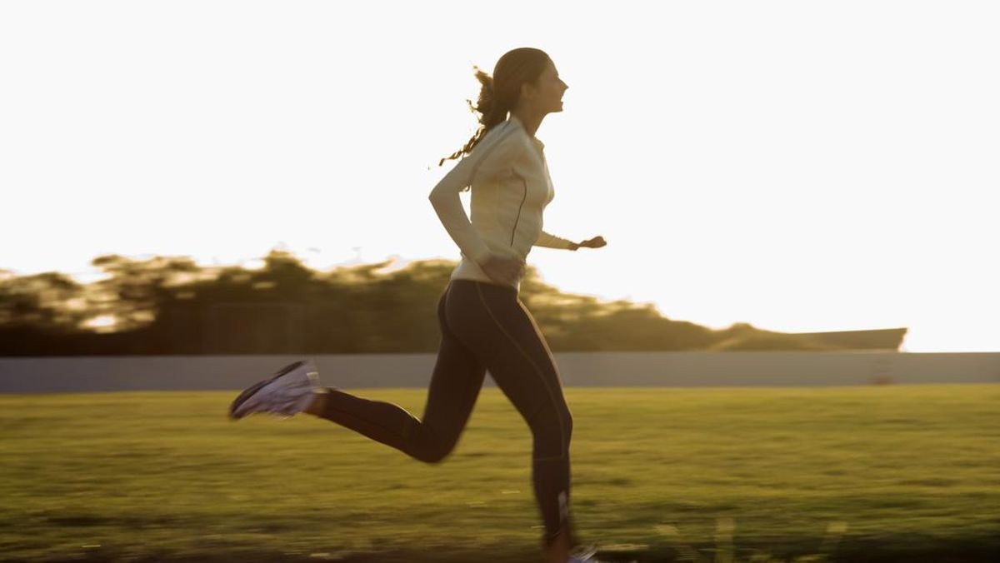
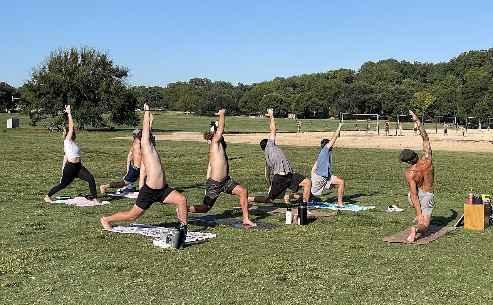

Ringan
Masih bisa bernyanyi sambil bergerak. Contoh: berjalan santai, berdiri mengerjakan tugas, merapikan kamar.
Bermanfaat, tetapi belum dihitung memenuhi target menit.
Anjuran aktivitas fisik berbeda menurut usia. Halaman ini menjelaskan angka yang dipakai WHO, cara membedakan intensitas sedang dan berat, serta cara memulai dari kondisi yang belum terbiasa bergerak.
WHO mencatat hampir sepertiga orang dewasa di dunia, sekitar 1,8 miliar orang, tidak memenuhi anjuran minimal aktivitas fisik. Orang yang kurang aktif memiliki risiko kematian 20–30% lebih tinggi dibandingkan orang yang cukup aktif.
Di Indonesia, hasil Survei Kesehatan Indonesia (SKI) 2023 menunjukkan 37,4% penduduk berusia 10 tahun ke atas kurang melakukan aktivitas fisik. Duduk terlalu lama, kendaraan pribadi, dan hiburan layar membuat gerak menjadi hal yang harus disengaja, bukan otomatis.
Penting: "olahraga" dan "aktivitas fisik" tidak sama. Menyapu, mencuci, naik tangga, dan berjalan ke kampus juga dihitung sebagai aktivitas fisik. Olahraga hanyalah bagian yang terencana.

Angka di bawah ini berasal dari pedoman WHO tentang aktivitas fisik dan perilaku sedentari. Prinsip utamanya: sedikit gerak masih lebih baik daripada tidak sama sekali, dan semua gerakan dihitung.
| Kelompok | Aktivitas aerobik | Intensitas berat | Penguatan otot |
|---|---|---|---|
| Anak & remaja 5–17 tahun | Minimal 60 menit per hari, intensitas sedang sampai berat | Tercakup dalam 60 menit harian tersebut | Minimal 3 kali seminggu |
| Dewasa 18–64 tahun | 150–300 menit per minggu | 75–150 menit per minggu, atau kombinasi keduanya | 2 hari atau lebih per minggu |
| Lanjut usia 65 tahun ke atas | 150–300 menit per minggu | 75–150 menit per minggu bila mampu | 2 hari atau lebih, plus latihan keseimbangan |
Sumber: WHO, Physical activity fact sheet dan WHO Guidelines on physical activity and sedentary behaviour.
Artinya untuk mahasiswa: 150 menit per minggu bisa dipecah menjadi 30 menit, lima hari seminggu. Itu setara jalan cepat keliling kampus satu putaran, atau naik-turun tangga beberapa kali dengan tempo yang membuat napas sedikit lebih cepat.
Kamu tidak perlu alat ukur. Gunakan tes bicara dan pernapasan berikut.
Masih bisa bernyanyi sambil bergerak. Contoh: berjalan santai, berdiri mengerjakan tugas, merapikan kamar.
Bermanfaat, tetapi belum dihitung memenuhi target menit.
Napas lebih cepat, bisa bicara tetapi tidak bisa bernyanyi. Contoh: jalan cepat, bersepeda santai, menyapu, menari.
Ini yang dihitung dalam target 150 menit per minggu.
Hanya bisa mengucapkan beberapa kata sebelum menarik napas. Contoh: lari, naik tangga cepat, senam intens, angkat beban.
1 menit intensitas berat dihitung setara 2 menit sedang.
Kalau kamu belum pernah rutin bergerak, memaksakan 30 menit penuh setiap hari justru sering berakhir berhenti di minggu pertama. Naikkan beban secara bertahap.
Hentikan latihan dan konsultasi ke tenaga kesehatan bila muncul nyeri dada, pusing berat, atau sesak yang tidak wajar. Ini bukan tanda kelemahan, melainkan informasi penting.

Duduk berjam-jam saat kuliah, mengerjakan tugas, atau menonton termasuk perilaku sedentari. WHO menganjurkan semua kelompok usia membatasi waktu sedentari, karena efeknya tidak sepenuhnya bisa "ditebus" hanya dengan olahraga sekali seminggu.
Ya. Pedoman WHO menegaskan bahwa semua aktivitas dihitung dan sedikit gerak lebih baik daripada tidak sama sekali. Lima belas menit jalan cepat setiap hari sudah memberi manfaat, meskipun belum memenuhi target mingguan.
Tidak. Berat badan sendiri sudah cukup: squat, push-up dengan lutut di lantai, plank, dan bridge. Yang penting adalah melatih kelompok otot besar dua kali seminggu.
Latihan berat mendekati waktu tidur bisa membuat sulit tidur pada sebagian orang. Beri jeda sekitar satu sampai dua jam, atau pilih intensitas ringan seperti peregangan.
Berkeringat adalah cara tubuh mendinginkan diri, bukan ukuran keberhasilan latihan. Yang lebih penting adalah durasi, intensitas, dan konsistensi.
Aktivitas fisik terbukti membantu suasana hati. Halaman berikutnya membahas kesehatan mental dan kapan perlu mencari bantuan.